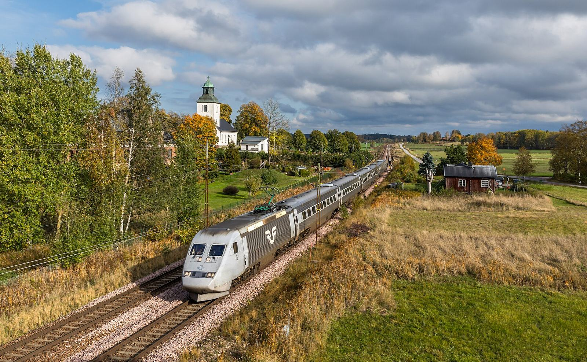
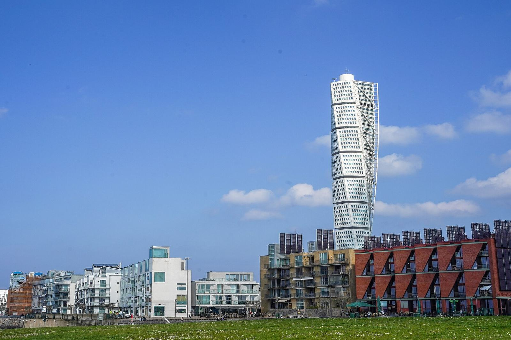
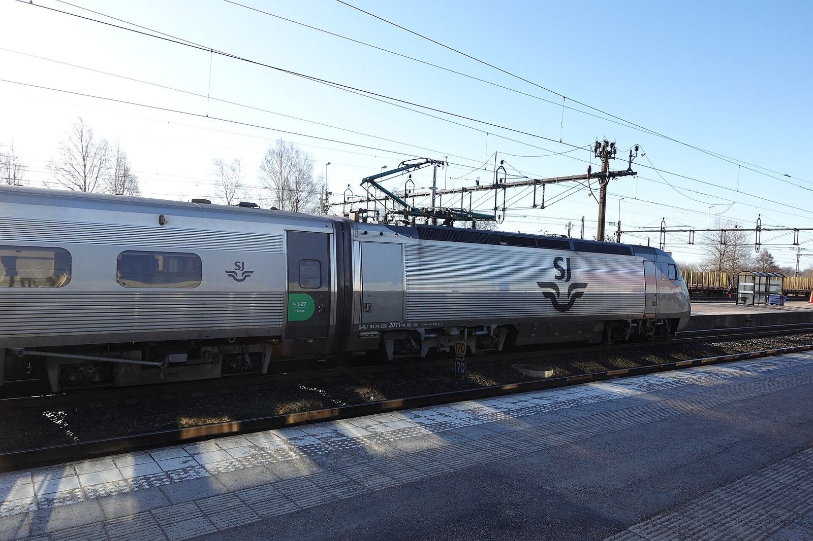
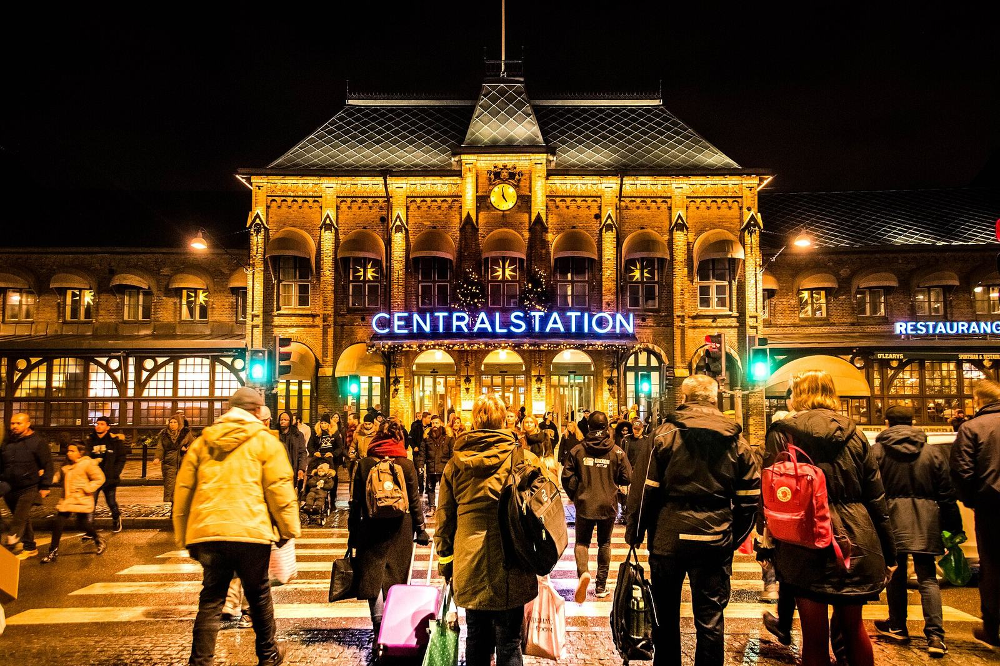

Luta dig tillbaka. Vi kör.
Snabbtåg, regionaltåg och nattåg genom hela Sverige och vidare till Norge, Danmark och Tyskland.
Populära resmål
Visa alla resmål-

-

-
 Populär
Populär -
Nattåg
Våra tåg
Från snabbtåg i 200 km/h till nattåg. Sovvagnar har vi kört sedan 1886. Hela X 2000-flottan byggs om, och i oktober 2026 var 14 av 36 tåg klara.

SJ Snabbtåg
X 2000 och SJ 3000 kör i upp till 200 km/h. X 2000 lutar inåt i kurvorna och kommer därför fram fortare.
SJ InterCity
Lokdragna tåg som stannar lite oftare. Vagnarna får nya golv och eluttag inuti.
SJ Regional
Dubbeldäckare för dig som pendlar. De moderniserade har nya säten, USB-uttag, cykelplatser och 5G-baserat wifi.
SJ Nattåg
Sittvagn, liggvagn eller sovvagn. Kliv på på kvällen och vakna i Norrland eller i fjällen.
SJ EuroNight
Nattåget till Hamburg och Berlin är tillbaka från 13 december 2026.
SJ Prio
Samla poäng när du reser och hos våra partner. Använd dem till nästa resa, eller skänk dem till SJ:s ideella partner.
- 1,8 miljonermedlemmar
- 3 nivåerPrio, Prio Plus och Prio Premium

Appen
Biljetten, tåget och perrongen i fickan.
Appen och sj.se hade 286 miljoner besök under 2025.
Kundservice
Vi hjälper dig före, under och efter resan.
Chatt
Sonja svarar via Hjälp på sj.se.
Dygnet runt
Telefon
Måndag–fredag 08–17
E-post
Reklamationer hanteras inom 7 dagar